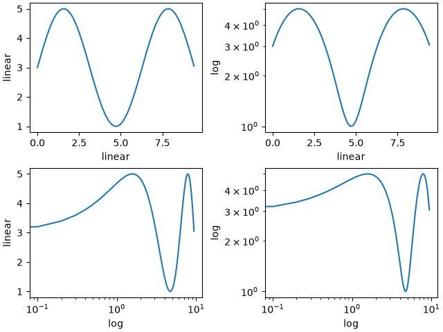
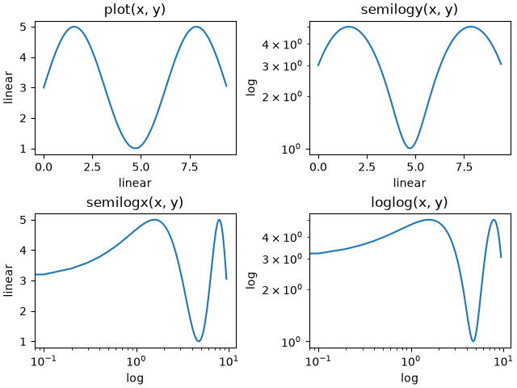
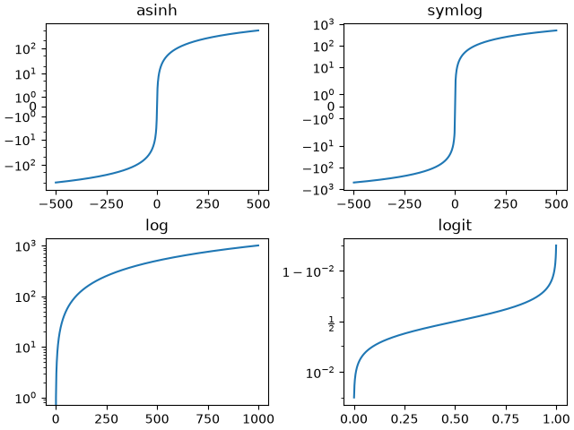
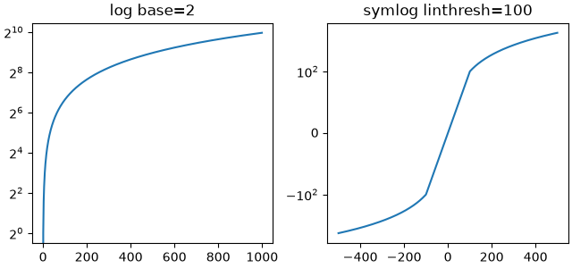
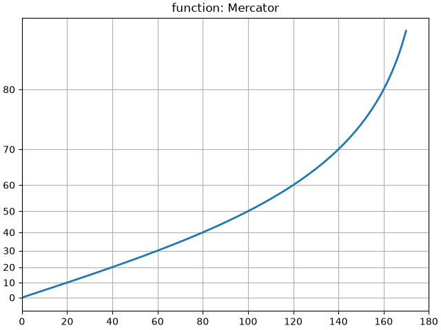
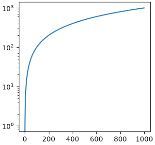

Note
Go to the end to download the full example code.
Axis scales#
By default Matplotlib displays data on the axis using a linear scale.
Matplotlib also supports logarithmic scales, and other less common
scales as well. Usually this can be done directly by using the
set_xscale or set_yscale methods.
import matplotlib.pyplot as plt
import numpy as np
import matplotlib.scale as mscale
from matplotlib.ticker import FixedLocator, NullFormatter
fig, axs = plt.subplot_mosaic([['linear', 'linear-log'],
['log-linear', 'log-log']], layout='constrained')
x = np.arange(0, 3*np.pi, 0.1)
y = 2 * np.sin(x) + 3
ax = axs['linear']
ax.plot(x, y)
ax.set_xlabel('linear')
ax.set_ylabel('linear')
ax = axs['linear-log']
ax.plot(x, y)
ax.set_yscale('log')
ax.set_xlabel('linear')
ax.set_ylabel('log')
ax = axs['log-linear']
ax.plot(x, y)
ax.set_xscale('log')
ax.set_xlabel('log')
ax.set_ylabel('linear')
ax = axs['log-log']
ax.plot(x, y)
ax.set_xscale('log')
ax.set_yscale('log')
ax.set_xlabel('log')
ax.set_ylabel('log')

loglog and semilogx/y#
The logarithmic axis is used so often that there are a set
helper functions, that do the same thing: semilogy,
semilogx, and loglog.
fig, axs = plt.subplot_mosaic([['linear', 'linear-log'],
['log-linear', 'log-log']], layout='constrained')
x = np.arange(0, 3*np.pi, 0.1)
y = 2 * np.sin(x) + 3
ax = axs['linear']
ax.plot(x, y)
ax.set_xlabel('linear')
ax.set_ylabel('linear')
ax.set_title('plot(x, y)')
ax = axs['linear-log']
ax.semilogy(x, y)
ax.set_xlabel('linear')
ax.set_ylabel('log')
ax.set_title('semilogy(x, y)')
ax = axs['log-linear']
ax.semilogx(x, y)
ax.set_xlabel('log')
ax.set_ylabel('linear')
ax.set_title('semilogx(x, y)')
ax = axs['log-log']
ax.loglog(x, y)
ax.set_xlabel('log')
ax.set_ylabel('log')
ax.set_title('loglog(x, y)')

Other built-in scales#
There are other scales that can be used. The list of registered
scales can be returned from scale.get_scale_names:
print(mscale.get_scale_names())
['asinh', 'function', 'functionlog', 'linear', 'log', 'logit', 'symlog']
fig, axs = plt.subplot_mosaic([['asinh', 'symlog'],
['log', 'logit']], layout='constrained')
x = np.arange(0, 1000)
for name, ax in axs.items():
if name in ['asinh', 'symlog']:
yy = x - np.mean(x)
elif name in ['logit']:
yy = (x-np.min(x))
yy = yy / np.max(np.abs(yy))
else:
yy = x
ax.plot(yy, yy)
ax.set_yscale(name)
ax.set_title(name)

Optional arguments for scales#
Some of the default scales have optional arguments. These are
documented in the API reference for the respective scales at
scale. One can change the base of the logarithm
being plotted (eg 2 below) or the linear threshold range
for 'symlog'.
fig, axs = plt.subplot_mosaic([['log', 'symlog']], layout='constrained',
figsize=(6.4, 3))
for name, ax in axs.items():
if name in ['log']:
ax.plot(x, x)
ax.set_yscale('log', base=2)
ax.set_title('log base=2')
else:
ax.plot(x - np.mean(x), x - np.mean(x))
ax.set_yscale('symlog', linthresh=100)
ax.set_title('symlog linthresh=100')

Arbitrary function scales#
Users can define a full scale class and pass that to set_xscale
and set_yscale (see Custom scale). A short cut for this
is to use the 'function' scale, and pass as extra arguments a forward and
an inverse function. The following performs a Mercator transform to the y-axis.
# Function Mercator transform
def forward(a):
a = np.deg2rad(a)
return np.rad2deg(np.log(np.abs(np.tan(a) + 1.0 / np.cos(a))))
def inverse(a):
a = np.deg2rad(a)
return np.rad2deg(np.arctan(np.sinh(a)))
t = np.arange(0, 170.0, 0.1)
s = t / 2.
fig, ax = plt.subplots(layout='constrained')
ax.plot(t, s, '-', lw=2)
ax.set_yscale('function', functions=(forward, inverse))
ax.set_title('function: Mercator')
ax.grid(True)
ax.set_xlim(0, 180)
ax.yaxis.set_minor_formatter(NullFormatter())
ax.yaxis.set_major_locator(FixedLocator(np.arange(0, 90, 10)))

What is a "scale"?#
A scale is an object that gets attached to an axis. The class documentation
is at scale. set_xscale and set_yscale
set the scale on the respective Axis objects. You can determine the scale
on an axis with get_scale:
fig, ax = plt.subplots(layout='constrained',
figsize=(3.2, 3))
ax.semilogy(x, x)
print(ax.xaxis.get_scale())
print(ax.yaxis.get_scale())

linear
log
Setting a scale does three things. First it defines a transform on the axis
that maps between data values to position along the axis. This transform can
be accessed via get_transform:
print(ax.yaxis.get_transform())
LogTransform(base=10, nonpositive='clip')
Transforms on the axis are a relatively low-level concept, but is one of the
important roles played by set_scale.
Setting the scale also sets default tick locators (ticker) and tick
formatters appropriate for the scale. An axis with a 'log' scale has a
LogLocator to pick ticks at decade intervals, and a
LogFormatter to use scientific notation on the decades.
print('X axis')
print(ax.xaxis.get_major_locator())
print(ax.xaxis.get_major_formatter())
print('Y axis')
print(ax.yaxis.get_major_locator())
print(ax.yaxis.get_major_formatter())
X axis
<matplotlib.ticker.AutoLocator object at 0x7acdbb032c00>
<matplotlib.ticker.ScalarFormatter object at 0x7acdbb08a1b0>
Y axis
<matplotlib.ticker.LogLocator object at 0x7acdbb1d5c40>
<matplotlib.ticker.LogFormatterSciNotation object at 0x7acdbb08eed0>
Total running time of the script: (0 minutes 6.036 seconds)